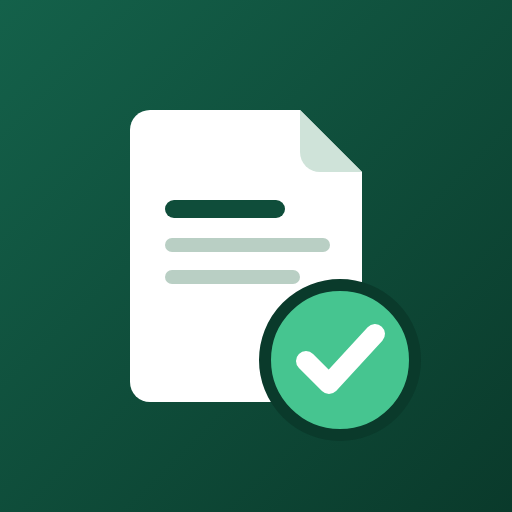

InvoiceWas auf eine Rechnung nach § 19 UStG gehört, wie der Hinweis zur Steuerbefreiung lauten kann, welche Umsatzgrenzen seit 2025 gelten – mit einem Muster zum Herunterladen.
Stand: 27. Oktober 2026 · Keine Steuer- oder Rechtsberatung. Im Zweifel frag deine Steuerberatung oder dein Finanzamt.
So sieht eine Rechnung eines Kleinunternehmers aus, die mit der App Invoice erstellt wurde (Beispieldaten):
Seit 2025 regelt § 34a UStDV, was eine Rechnung über steuerfreie Umsätze nach § 19 UStG mindestens enthalten muss:
Eine Umsatzsteuer weist du nicht aus. Eine fortlaufende Rechnungsnummer nennt § 34a nicht ausdrücklich – für deine Buchhaltung ist sie trotzdem sinnvoll, und viele Kunden erwarten sie.
Der Wortlaut ist nicht vorgeschrieben; wichtig ist der Bezug auf die Kleinunternehmerregelung. Zum Beispiel:
Umsatzsteuerfrei aufgrund der Kleinunternehmerregelung gemäß § 19 UStG.
Nach § 19 Abs. 1 UStG sind deine Umsätze steuerfrei, wenn dein Gesamtumsatz
Wird die Grenze von 100.000 € im laufenden Jahr überschritten, gilt die Befreiung nicht mehr – ab dann brauchst du Rechnungen mit Umsatzsteuer. Kläre den genauen Zeitpunkt mit deiner Steuerberatung.
Zum Ausstellen: nein. Nach § 34a Satz 4 UStDV darfst du als Kleinunternehmer deine Rechnungen immer als „sonstige Rechnung“ übermitteln – also als PDF oder auf Papier, auch an andere Unternehmen.
Zum Empfangen: Seit dem 1. Januar 2025 müssen auch Kleinunternehmer E-Rechnungen von anderen Unternehmen annehmen können.
Invoice ist eine App für iPhone, iPad und Android, mit der du Angebote schreibst, sie mit einem Tippen in Rechnungen umwandelst und Anzahlungen erfasst. Für Kleinunternehmer:
Funktioniert offline und ohne Konto; deine Rechnungen bleiben auf deinem Gerät. Kostenlos: unbegrenzt Angebote und insgesamt 3 Rechnungen, mit Werbung und einem kleinen „Made with Invoice“-Hinweis im PDF. Invoice Pro (Abo) schaltet unbegrenzte Rechnungen und die Vorlage nach DIN 5008 frei.
Invoice erstellt Dokumente aus deinen Angaben. Die App sendet nichts an das Finanzamt und ist kein zertifiziertes E-Rechnungssystem.